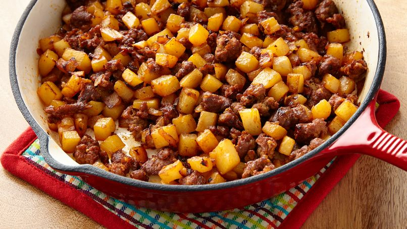

Papas con Chorizo

Description
Esta receta la aprendi de mi tia Clara cuando me cuidaba mi abula.
Es muy cercana a mi ninez y es una de mis recetas favoritas
con pocos ingredientes basicos.
Hoy les ensenare lo facil que es hacer desayuno para todos,
y que aun sea delicioso y barato.
Ingredientes
- 5 papas
- 1 chorizo
- 1 cebolla
- 2 chiles serranos
- 1 1/2 tomates
Instrucciones
- Cortar 5 papas en cubos de 2cm
- Freir en sarten con un poco de aceite hasta que se doren un poco
- En lo que la papa se frie cortar verduras cebolla, chile y tomate en cubos
- Cuando papa se dore, echar chorizo a freir con la papa para terminar de cocer la papacon el chorizo
- Cuando chorizo este medio dorado agregar los demas ingredientes para cocinar todo junto
- Agregar sal y pimienta al gusto
Return to main